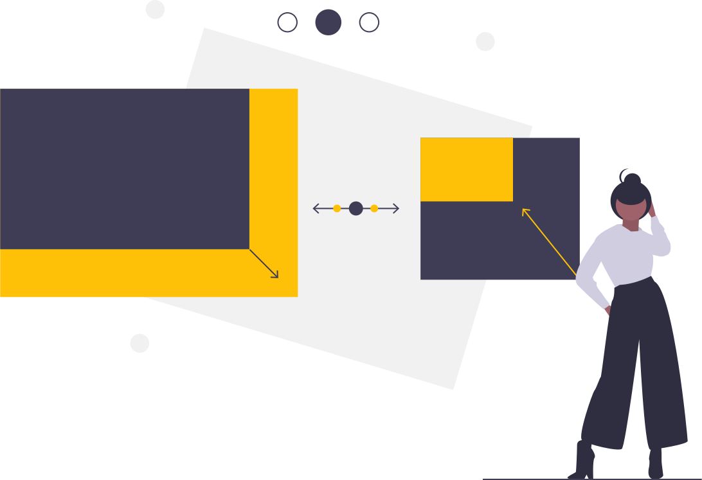
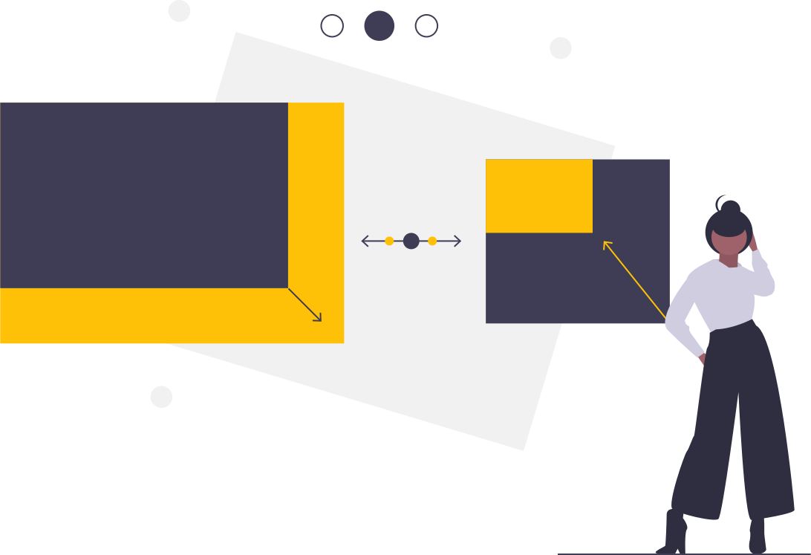

App ecosystem which can be a standalone OS (Linux or any other open kernel such as FreeBSD) or run inside any other OS.
Free, open(ethical)-source and decentralized. Lightweight or full-featured as your choice. Scalable to any device and resources. Yours.
OS - Lightweight or full-featured OS powering your device
HumaneOS
Truly decentralized. Lightweight, funny, ethical and modular operating system for any device.
Actually based in Linux/Debian.
Guest - A OS inside your OS
Internet Cat browser
Floflis OS as a web browser. Web 3.0 ready. Capable of running some important apps.
Yet in development. See it on GitHub or take a glance at its in-development site.
HTML5Apps Platform
Fully featured web apps platform, as graphical evolution of Floflis CLI apps and native-like apps evolution of Internet Cat.
It is like PortableApps Platform. It can run Internet Cat and any other Electron app, but using the same runtime, enabling apps which comes from thousand megabytes to just a few kilobytes.
Yet in development. See it on GitHub or take a glance at its in-development site.
CLI
Floflis' operating base. Even the graphical layers uses CLI.
Composed of DNA, Core and Soil layers. Further CLI layers spawns graphic desktop.
AccessKnow more about the floverse:


Decentralized
Do you like decentralization? No purpose if your OS isn't yet decentralized.
All Linux OSes claims themselves as free/libre; but they puts you in risk when downloading updates (for OS and its softwares) from centralized servers.
Floflis is decentralized, with updates from P2P network (Dat/IPFS protocols), storing data in a blockchain-like (append-only logs) datastore.
- Apps/games are owned and managed by their community, not from servers
- Receive verified OS updates from your friends/connections
Do you want to know when Floflis gets decentralized updates? Subscribe to our blog.
 

Modular
Can you install Windows 7 on your Windows 98 machine, or on your WiFi router?
You have rights on your device and on its OS; and as it is yours, you should have the right to move, transform, shrink or grow it.
Floflis haves various layers, beginning in Recipes layer.
- Recipes layer contains links to compilers and source-codes, for targeting lots of different devices. Isn't a usable layer, but only a reference/map/documentation/scriptset for developers.
- DNA layer is the working and primal Floflis. Haves Floflis' basic subsystem and is upgradeable to Core. Also, it can come as a standalone OS or installable as program on your Linux/MacOS (or any other device/OS).
- Core layer is upgradeable from DNA. Contains advanced CLI programs, such as NodeJS+Dat and CJDNS/Yggdrasil.
There are also other layers, but they're graphical: Grass, Base, Home, Ultimate and Quantum.
CLI software from these layers can also be installed on DNA/Core.Do you want to know when the other layers are available? Subscribe to our blog.
Lightweight, fast, smooth
A enlightment window desktop, modest XFCE or a full-featured version. You can grow or shrink your OS at any time. Download for any device kind of any capability. It adapts itself to fit available resources.
When installing itself, Floflis DNA asks which modules you want to include. Also, you can remove later any module you won't need.
Download should be fast on slow Internet connections (from 700KB to 2KB), and writable on CDs and even floppy disks.
Easily install Floflis on your router, Raspberry Pi, etc. Just type "floflis", and it will guide you; running fastly and smoothly, being personalizable/upgradeable.
Don't like bloatware OS on your router and others? Instead of installing Floflis as a bash program, you can install it as a OS.
Fully adjustable
Already pointed how Floflis is modular and lightweight.
But more personalization is to be implemented, such as themes and sets.

It's yours
- Trully open-source (doesn't includes proprietary software, and incentives you to not depend on that)
- Totally personalizable
- Fully decentralized
- Respects your privacy

Decentralized identity (comming soon)
Have accounts on multiple decentralized registries, linked into one decentralized account (omni-link).
Add friends and exchange files/Internet routing.
Do you want to know when this feature lands? Subscribe to our blog.


Do you love Floflis?
Floflis loves people. People loves Floflis. Everyone helps and loves each other.
We're accepting donations in Ethereum. Other cryptocurrencies will be accepted soon. Donations will be traceable on blockchain, and our use of donations will be tracked for your scrutiny.
Ethereum address: 0x1a4E55f9f57D53Fbd9598CD8EEACF2Af4E91F420.

Receive updates from Floflis
Subscribe to our JsonFeed or RSS feed.


Your voice matters
Found bugs or wants to suggest a thing? Or to discuss anything?
Send a email to: daniellmesquita@protonmail.com.
To do:
- Email newsletters
- Website in Hugo